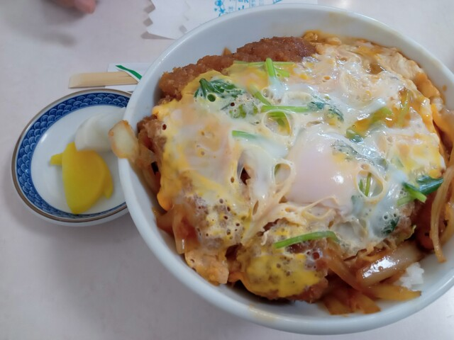
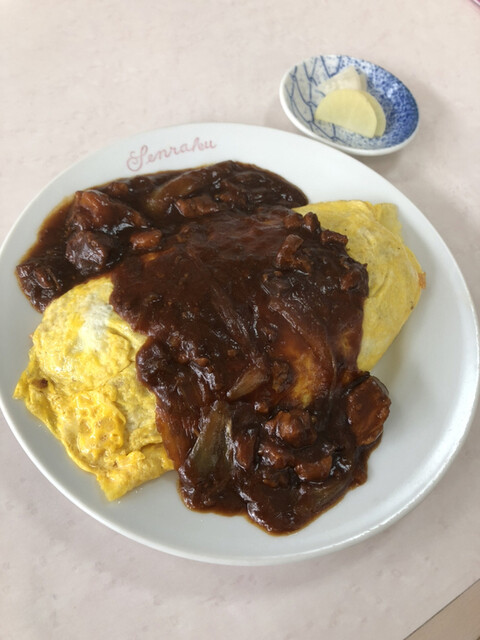
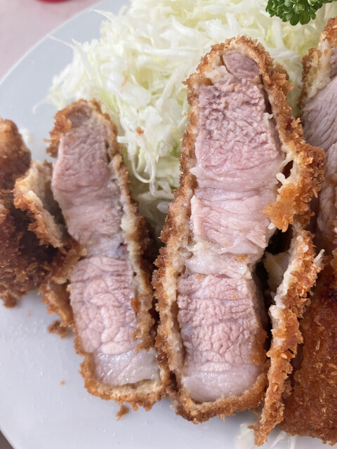

カツハヤシ/オムライス/カツ丼/エビフライ/昭和創業/
カツハヤシ/オムライス/カツ丼/エビフライ/昭和創業/
OUR STORY
変わらない味を、沼津で。
昭和の昔から下本町で愛され続ける老舗洋食店。デミグラスとカツが重なる名物「カツハヤシ」は、世代を超えて通う地元の記憶の味です。
将棋・藤井聡太棋士が「勝負メシ」に選んだ味としても話題に。
MENU
お品書き

カツハヤシ （大盛 ¥1,700）
¥1,500

カツ丼
¥950

オムハヤシ
¥1,100

とんかつ
¥1,000
RESERVE
ご予約・お問い合わせ
お昼時は混み合います。お電話でのご予約がおすすめです。
ACCESS
店舗情報
| 住所 | 静岡県沼津市下本町 |
|---|---|
| 電話 | 055-962-1946 |
| 営業 | 昼 11:00〜14:00／夜 17:00〜20:30 ※参考 |
| 定休 | 火曜 |